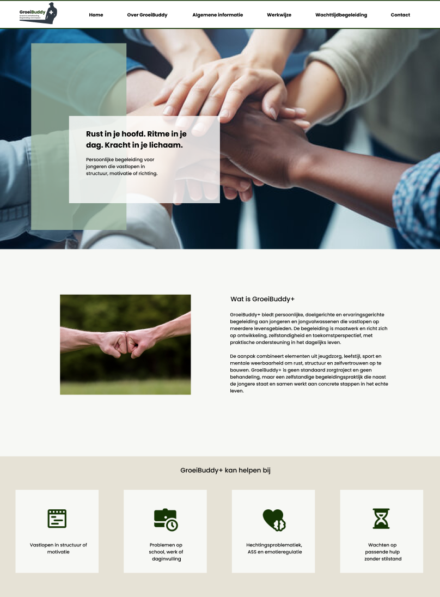

GroeiBuddy+
Voor GroeiBuddy+ heb ik een website ontworpen en gerealiseerd voor een persoonlijk begeleider. De
begeleiding richt zich op mensen op het spectrum en maakt gebruik van sport als middel. Daarom
was het belangrijk dat de website zowel rust en vertrouwen uitstraalt, als een subtiele,
sportieve energie heeft.
Ik heb het design opgezet met focus op overzicht en gebruiksvriendelijkheid, zodat bezoekers
zich snel op hun gemak voelen en makkelijk hun weg vinden. De visuele stijl is zacht en
vriendelijk, met een balans tussen rust en beweging die aansluit bij de manier van
begeleiden.
Na het ontwerpen heb ik de website gebouwd in WordPress en het design vertaald naar een werkende
site. Hierbij heb ik ervoor gezorgd dat de inhoud duidelijk gepresenteerd wordt en eenvoudig te
beheren is.
